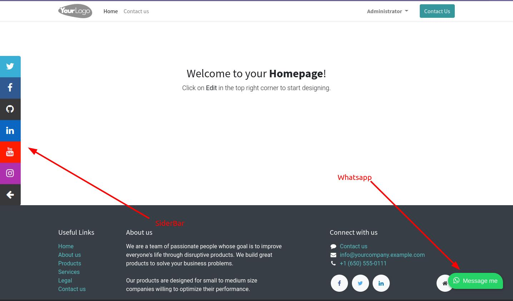
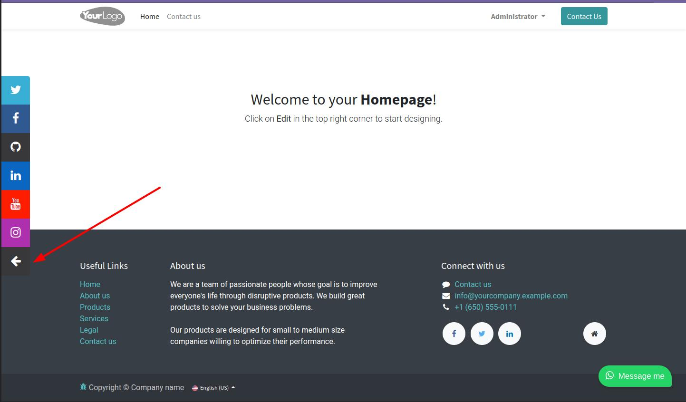
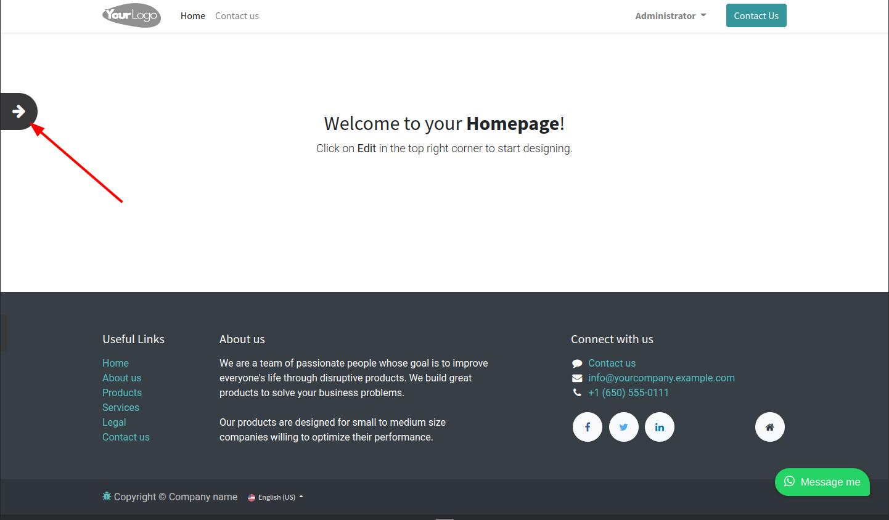

<section class="oe_container">
    <div class="oe_row oe_spaced">
        <div class="oe_span12">
            <h2 class="oe_slogan" style="color:#875A7B;">
                Social Media Sidebar 
            </h2>
            <h3 class="oe_slogan" style="color:#875A7B;">
               By Pi Technology 
            </h3>
        </div>
    </div>
</section>
<section class="oe_container">
    <div class="oe_row oe_spaced">
        <div class="oe_span12">
            <h3>How to configure</h3>
            <ul class="list-unstyled">
                <li>1. Install module</li>
                <li>2. Go to Website->Settings</li>
                <li>3. Activate social media, and add links(In Whatsapp Phone Number add the url in this format: https://api.whatsapp.com/send?phone=1xxxxxxxxx&text=I%27m%20interested)</li>
            </ul>
        </div>
    </div>
</section>
<section class="oe_container oe_dark">
    <div class="oe_row oe_spaced">
        <div class="oe_screenshot" align="center">
            
            
            
        </div>
    </div>
</section>
